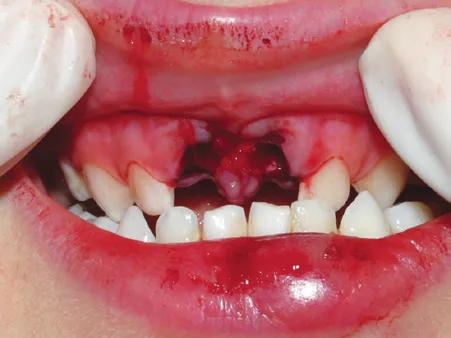

نسخه استخراجشده؛ ترجمه یا تأیید علمی انجام نشده است. وضعیت: captured
دندان شیری آولسه ریایمپلنت نمیشود. این قاعده به زمان، محیط نگهداری یا سن کودک بستگی ندارد.
دلیل: فشار و آلودگی حین جاگذاری مستقیماً به جوانهی دندان دائمی زیر حفره میرسد — و آسیب به مینای در حال ساخت، برگشتناپذیر است.
پس این یک سنجش خطر و منفعت است: دندانی که بههرحال میرود، ارزش به خطر انداختن جانشینش را ندارد.
آنچه باید انجام دهی: کنترل خونریزی، بررسی رادیوگرافیک برای اطمینان از اینکه دندان واقعاً آولسه شده و نه اینتروده، و ارزیابی نیاز به حفظ فضا. اگر دندان نه در دهان پیدا شد و نه در رادیوگرافی، احتمال آسپیراسیون را هم در نظر بگیر و کودک را برای بررسی پزشکی ارجاع بده.

شکستگی تاج بدون اکسپوژر پالپ — صاف کردن لبه یا ترمیم، مانند دندان دائمی.
با اکسپوژر پالپ — بسته به وضعیت پالپ و عمر باقیماندهی دندان: پالپوتومی، یا کشیدن اگر دندان نزدیک افتادن است.
شکستگی ریشه: اگر قطعهی تاجی پایدار باشد، مشاهده. اگر لق و آزاردهنده باشد، فقط قطعهی تاجی برداشته میشود.
و یک نکتهی مهم: قطعهی اپیکالی باقیمانده معمولاً خارج نمیشود — جستجو برای آن، جوانهی دائمی را بیش از خود قطعه به خطر میاندازد و اغلب خودش جذب میشود.
نوع سؤال: ساخت کلمه · 7 خانه
حروف منبع: ک · ا · پ · ی · ل · ا · ی